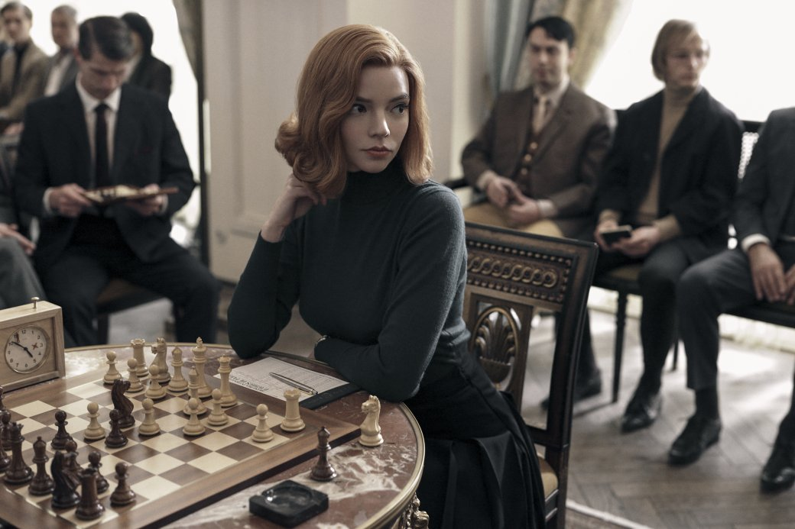

«Ход королевы» — мини-сериал Netflix о гениальной шахматистке Бет Хармон. Он сочетает драму взросления, шахматы как метафору жизни и эстетику 1950–1960-х.

«Ход королевы» — мини-сериал Netflix о гениальной шахматистке Бет Хармон. Он сочетает драму взросления, шахматы как метафору жизни и эстетику 1950–1960-х.
Бет — талантливая шахматистка, прошедшая путь от сиротского приюта до мировых турниров. Она борется не только с соперниками, но и с зависимостями и внутренними демонами.
«Шахматы — это красота борьбы.»
«В шахматах, как и в жизни, нельзя быть слишком самоуверенной.»
Шахматная доска — символ выбора и судьбы. Таблетки — символ зависимости. Белая королева — символ свободы и победы.